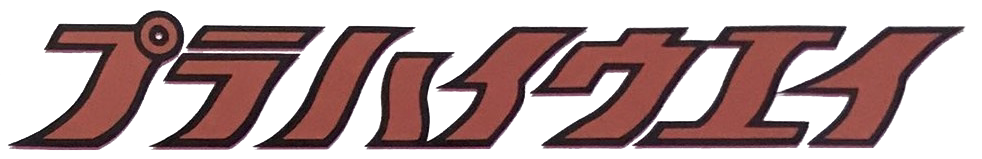
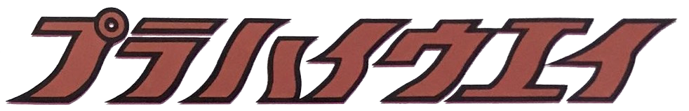

| はじめに | セット |
|---|
ダブルハイウェイNO.1
Status: Excavated, Unobtained
The first set in the Double Highway line which has light blue coloured point rails and light blue coloured 45 degree curve rails. The included vehicle is a matte red Corona 1600S Hardtop with dark grey windows and the new type of dolly. The layout is an infinite loop, where only half of the loop is a double lane highway. Not much is known about this set currently.
This incomplete review was written by LS_Vio.

ダブルハイウェイNO.2
Provider: LS_Zwilling
This set remained unexcavated until 18/09/2022. The fact that a yellow highway station with both male joints on the left side and both female joints on the right side made us question its origin for a very long time. This yellow highway station is unique because it has no car stop switches installed in the middle unlike the red highway station from the Pla Highway Interchange Set, and this is the ancestor of all 3 known types of highway stations. The set originally came with 4 normal street lamps and I believe this is specifically for the 4 corners of the highway station. The set includes a generous amount of Yがいとう which is intended to be installed in the middle of the ダブルきょくせん. The set also includes only 1 double overhead signboard, yes just 1, which I find it pitiful. ダブルハイウェイNO.1 includes only 4 ダブルきょくせん, but ダブルハイウェイNO.2 offers double the amount, so double the happiness. The set includes 2 cars, the patrol Corona 1600S Hardtop which is the rarest Pla Highway vehicle known to exist, and another unknown vehicle that was not included at the time Zwilling got it. Both vehicles have the new type of dolly. The main highlight of this set is the highway station, which is extremely rare because of the orientation of the joints, and only 2 of those highway stations are known to survive today. The layout is an infinite oval loop, where half of the loop is elevated. It is noteworthy that ダブルきょくせん can be elevated. The gimmick of the highway station is exactly like a Plarail ふくせんステーション, but with the liberty to manually release the vehicle stopping mechanism.
This complete review was written by LS_Zwilling.
Provider: LS_Vio
Received the set from Zwilling for review on 09/12/2022. This set was recently found to contain 2 types of cars according to official sources: Corona 1600S Hardtop (Matte Red), and Patrol Car Corona 1600S Hardtop. The highway station is different from the one included in the domestic and exported version of インターチェンジセット; Firstly it has no manual car release lever (stop & go lever) in the middle of the station, and the orientation of the rail joints are different. It is noteworthy that a cameo of the same highway station can be found in the box illustration of the インターチェンジセット. The exact amount of Yがいとう, normal single streetlamps, and both types of trees are unknown as the product catalogue is not obtained yet.
This complete review was written by LS_Vio.